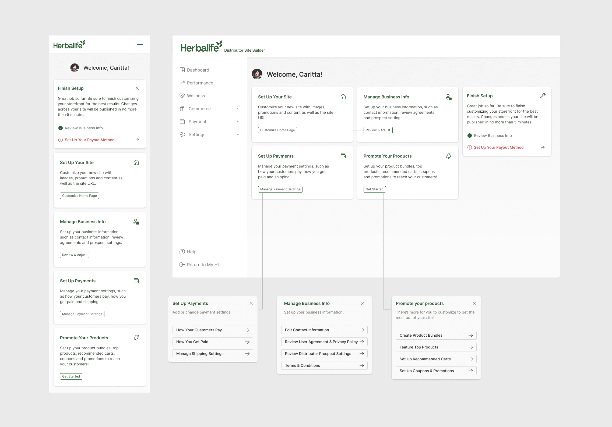
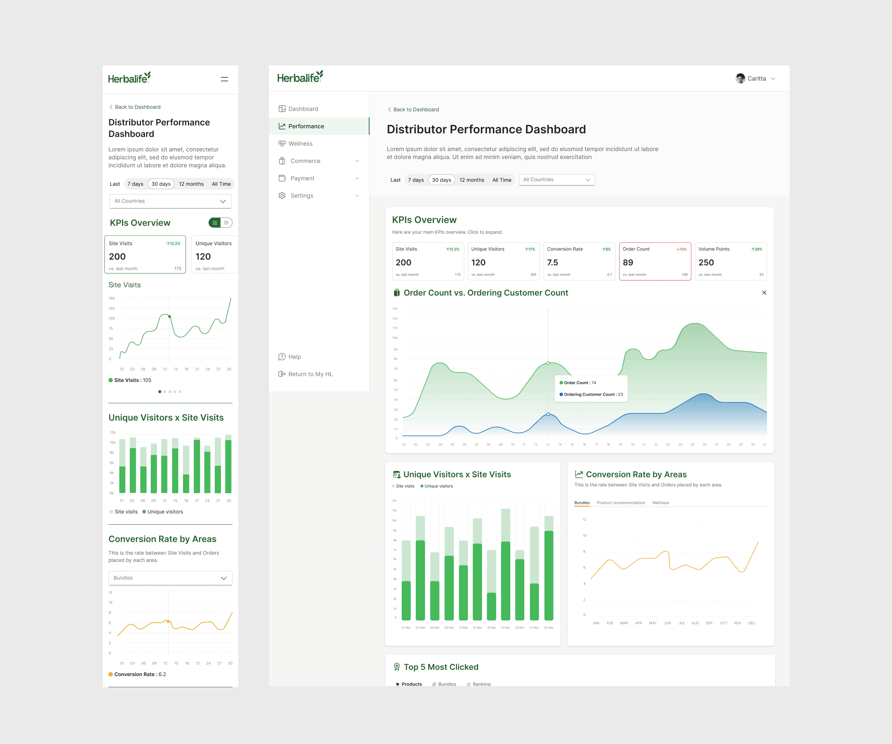
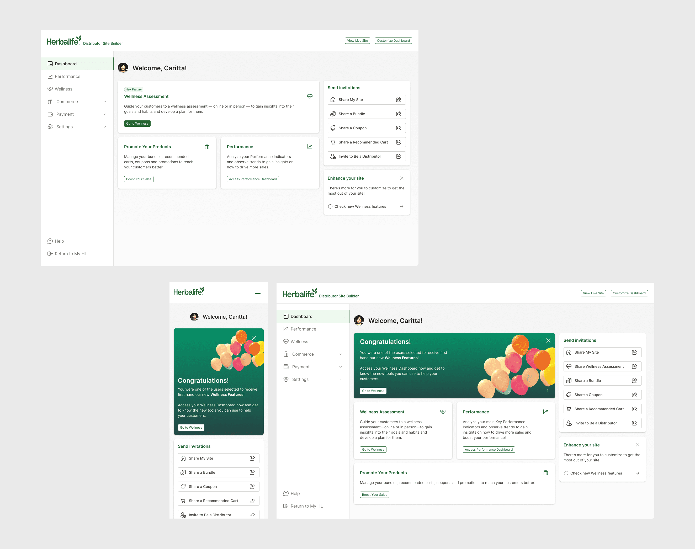
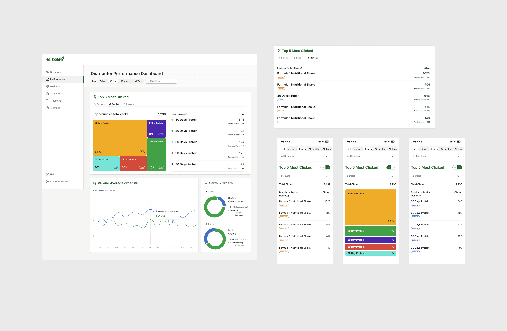
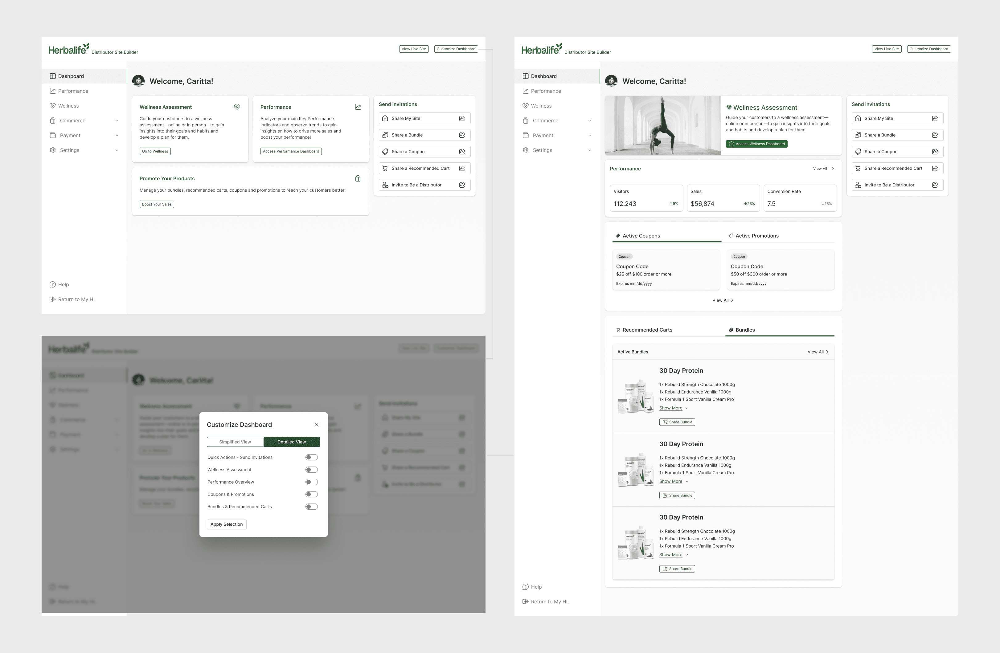

Unifying tools and insights to empower distributors

The Challenge
"How do we take a set of tools that grew one feature at a time and make them feel like a single, coherent business?"
Herbalife is a global wellness and nutrition company operating through a vast network of independent distributors, who manage their businesses using a suite of digital tools provided by the company. Over time, these tools had become fragmented, with key features — storefront setup, customer engagement, wellness tracking, performance monitoring — scattered across various sections of the platform. Distributors needed a clear, centralized, intuitive digital environment to support every phase of their journey, from onboarding to performance tracking.
Organizing complexity into a clear, actionable workspace.
We introduced a modular, action-driven dashboard that organizes tools by business function. Each key action became a card — clearly labeled, visually distinct, and placed according to distributor priorities. Core tools like Promote Your Products, Customize Your Site, Invite Customers and Manage Business Info are accessible as individual cards with concise descriptions and CTAs, letting distributors focus on one goal at a time. At the top, a setup tracker helps new users complete onboarding steps like configuring payments, customizing their storefront, sharing recommended carts, and activating loyalty features.

Compliance and discovery that don't interrupt the work.
The dashboard adapts based on user progress. When updates are needed — like revised payment settings — an Action Required banner appears: subtle but effective in maintaining compliance without breaking flow. To support feature discovery, we introduced lightweight visual cues like "New Feature" badges and an Enhance Your Site checklist, keeping distributors informed without distraction.

A dashboard that grows up with the distributor.
As new features are released, we surface them contextually — for example, Wellness appears in the Enhance Your Site panel and as a standalone card before it's activated, letting distributors send personalized assessments to customers and tailor recommendations from the results. After onboarding, the dashboard transitions to a simplified state with a Congratulations banner, highlighting only the most relevant tools — Performance, Wellness, Promotions — alongside a persistent Send Invitations panel. Distributors can also switch to a Customized View, choosing exactly which widgets stay visible.

Visualizing store metrics to drive smarter decisions.
Before this redesign, distributors had no visibility into how their storefronts were performing — no way to track visits, identify popular products, or see abandoned cart rates. We designed a full-screen Performance Dashboard with clear, interactive visualizations. A KPI Overview surfaces the metrics that matter most — site visits, unique visitors, conversion rate, order count, volume points, average order value — in tile format, defaulting to the past 30 days. Each tile expands into a related graph and collapses again for a cleaner view.

From black box to daily habit.
Below the KPI tiles, visual modules break down traffic trends, top-viewed products, cart funnel behavior, bundle performance and customer type — filterable by date or region. A Top 5 Most Clicked module ranks the bundles and products distributors are actually sharing, so performance stops being a black box and becomes something distributors can act on with confidence, every day.

Together, the new dashboard and performance experience form the foundation of a more scalable and human-centric distributor platform — supporting growth, efficiency and long-term engagement.


Let's build
something great.
danierocruz@gmail.com
Usually respond within 24h · Open to remote, B2B & SaaS projects.